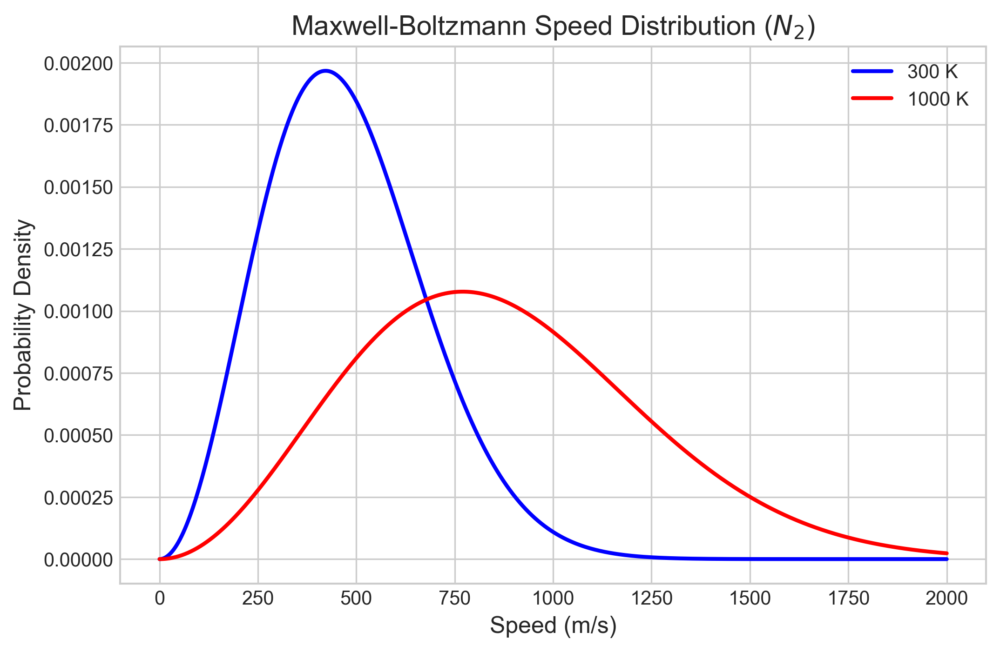
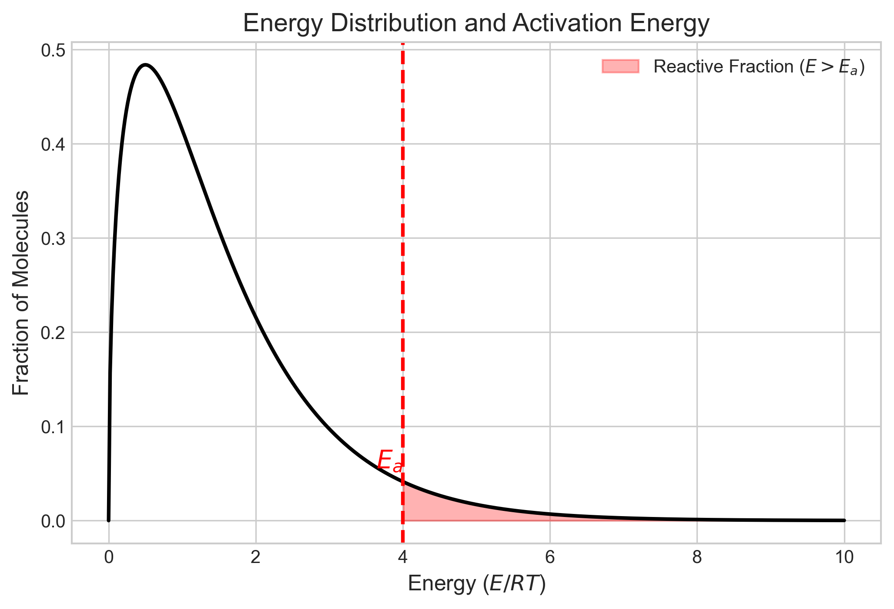
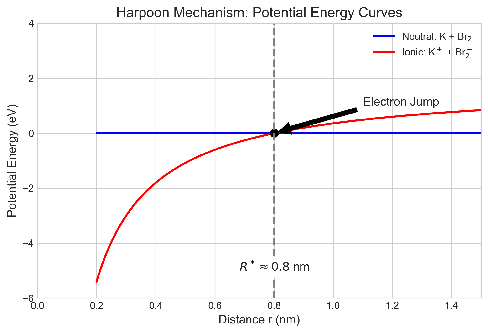

Reaction Dynamics • Physical Chemistry
Interactive Web Presentation
Reactions occur when molecules collide if:
Goal:
Derive the Arrhenius Equation from first principles.
The number of collisions per unit volume per unit time:
Molecules have a distribution of speeds.
Higher T $\to$ Broader distribution, higher mean speed.

Simulation:
For collisions between A and A ($Z_{AA}$):
The factor of $1/2$ prevents double-counting collisions.
Given: T = 298 K, P = 1 bar, $\sigma \approx 0.43$ nm$^2$
1. Number Density: $\mathcal{N} = P/k_BT \approx 2.43 \times 10^{25}$ m$^{-3}$
2. Mean Relative Speed: $\bar{v}_{rel} \approx 670$ m/s
3. Collision Density:
Not all collisions lead to reaction.
Only collisions with energy $\varepsilon \ge E_a$ react.
This exponential factor dramatically reduces the effective rate.
Myth: "Activation energy is the average energy of the molecules."
Reality:
Explore how Temperature and Activation Energy affect the reaction fraction.
Question: T increases from 300K to 310K (~3%). Rate doubles (~100%). Why?

Answer: (C)
The exponential factor $e^{-E_a/RT}$ is extremely sensitive to temperature changes.
The total rate is the sum of rates over all possible energies:
Key Substitutions:
Substituting and integrating from $E_a$ to $\infty$:
This looks scary, but it's a standard integral of the form $\int x e^{-x} dx$.
The solution yields the Collision Theory Rate Constant:
Success! This matches the Arrhenius form:
Collision theory predicts the pre-exponential factor:
Theory often overestimates the rate ($A_{theory} > A_{exp}$).
We introduce a correction factor $P$:
Align the molecule to react!
Move mouse to rotate the blue molecule.
Example: $K + Br_2 \to KBr + Br$ ($P \approx 4.8$)

How can $A \to P$ be explained by collisions?
Lindemann-Hinshelwood Mechanism:
Explore these concepts in the Jupyter Notebook:
Scan to open on mobile